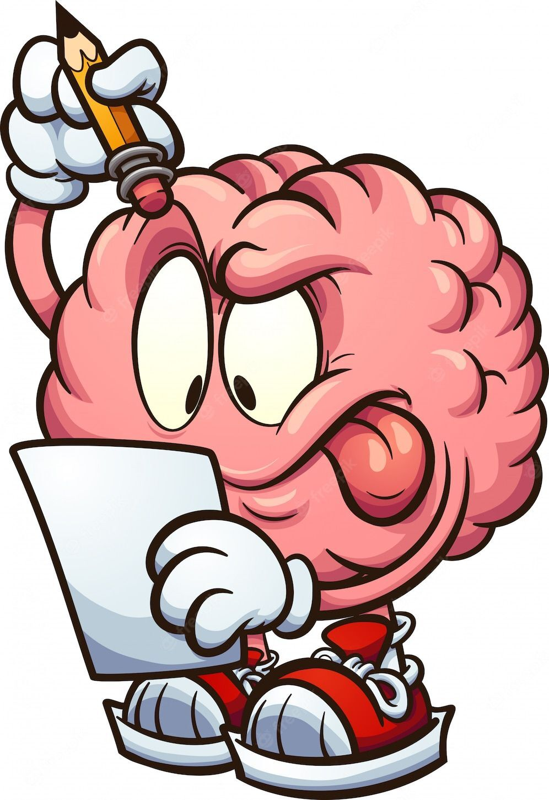

Personal and Professional Goals
Professional:
I'm currently studying Computer Science at Unifal and I'm also studying Web Development. I still haven't decided which area of computing I want to work in, but I continue my daily studies to learn the fundamentals and basis
of computing to use them in my professional life. My goal is to work for some Big Tech, mainly Google.
Personal:
My main dream is to have a family and be able to travel a lot around the world. My goal is to be able to make 3 annual trips, because traveling is something I love and value, because I believe that the only thing that will always
walk with us are the memories and experiences we had in life.
